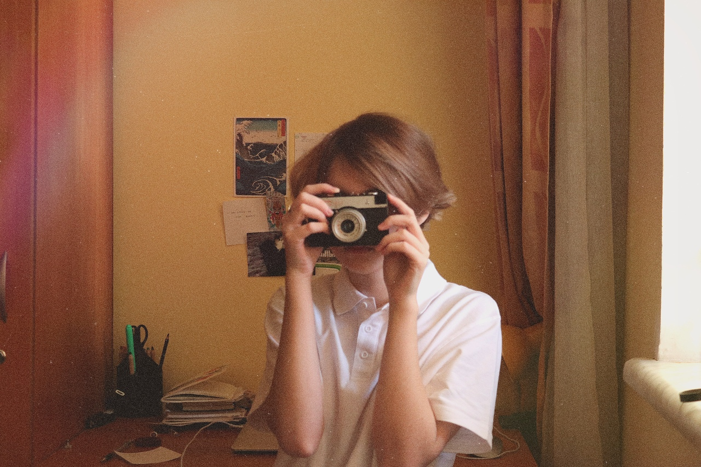
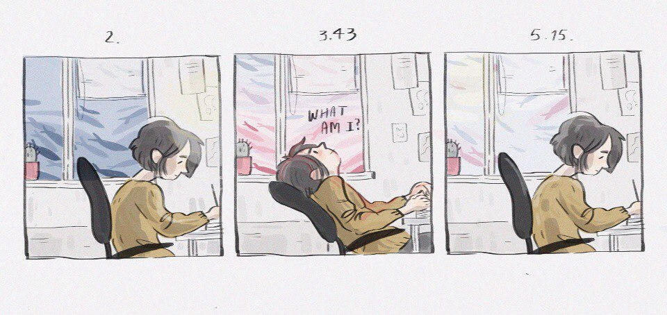
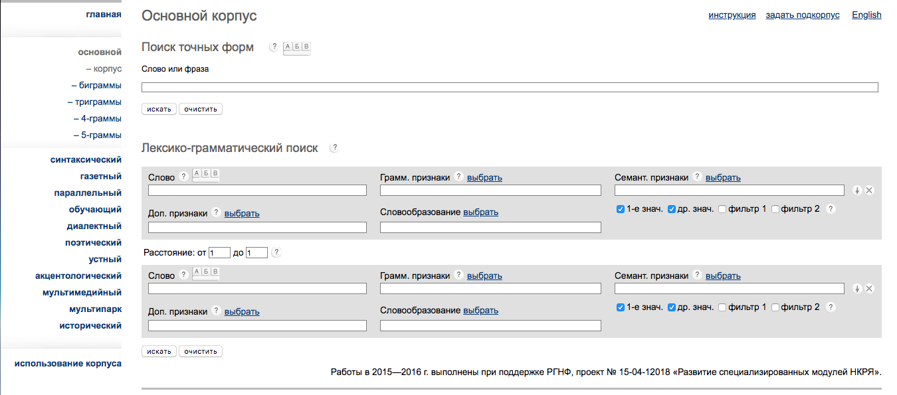
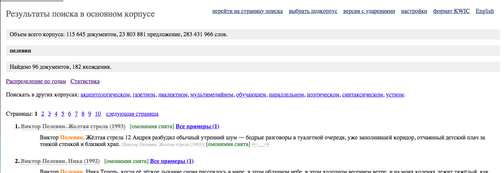
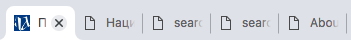

Информация о создательнице этого сайта
Прозаически-дневниковые данные
Здравствуй, прекрасный гость этой странички. Меня зовут Малика и я создала этот сайт для того чтобы рассказать о себе нашей преподавательнице по курсу Цифровая грамотность. Не знаю, она ли сейчас читает этот текст, или ассистент_ка, или ты являешься просто моим другом, которому я отправила ссылку на этот сайт. В любом случае, привет.

Есть ли смысл писать фио, как указывалось в требованиях? Что они скажут обо мне? Я не люблю свою фамилию, проэтому у меня много псевдонимов. Скоро хочу её сменить на то, что будет напоминать о моём отце. А пока мои фио выглядят следующим образом: Кулдашбаева Малика Камиловна. Надеюсь, что это изменится.
Сейчас я учусь в НИУ ВШЭ на факультете гуманитарных наук. На самом деле, дорогой читатель, я не хотела поступать сюда. С детства мне было близко искусство, в особенности музыка и живопись, и с 8 класса я мечтала работать в музее. К сожалению, я опрометчиво выбрала не те предметы для сдачи ЕГЭ, и мои искусствоведческие-культурологические планы cейчас отложены до окончания первого курса. Если получится перевестить на другое направление, я буду счастлива. Если не выйдет, подожду магистратуры.
Мои научные интересы можно описать словами "литература, живопись, музыка", но если говорить о конкретном, то я люблю выполнять краткосрочные задачи, работать над проектами по совершенно разным темам. Наверное, пока я метаюсь от одного к другому в своих любимых областях науки, поэтому научные интересы не представляют границ, если только они гуманитарные.
Кажется, о себе я уже многое рассказала, А что можешь написать мне ты? Добавлю разве что несколько фактов. Я очень люблю играть на разных музыкальных инструментах. На момент написания этого текста, 3 февраля 2019 года, я могу с уверенностью сказать, что умею играть на скрипке, фортепиано, гитаре, укулеле, калимбе и на ударной установке. Недавно заказала старенький советский ксилофон из дерева, скоро буду учиться играть на нем. Очень здорово исследовать музыку через разные способы её выражения - струнные, ударные, щипковые-язычковые. Духовые я пока не осилила и желания нет. Ещё я заметила такую особенность: когда я разговариваю с одним человеком, я невероятно эмоциональна, однако чем больше людей в моей компании, тем более замкнутой и лишней я становлюсь. Не люблю находиться с людьми даже если мы втроём, это некомфортно и страшно. Я считаю себя довольно чувствительной и чуткой, непостоянной и честной. Мне нравятся искренние люди, которые умеют хорошо излагать свои мысли, ведут себя странно и имеют своё мнение. Мне близки революционные начала, альтруизм и спонтанные решения. Так интереснее жить.
Немного о том, как современные технологии могут помочь филологии в XXI веке
Создатели работы «Филология и современные информационные технологии» К. В. Вигурский и И. А. Пильщиков называют филологию будущего «компьютерной филологией». Они выделяют шесть направлений работ, которые осуществляются с помощью современных информационных технологий в интересах филологической практики:
1. Электронный фонд русской словесности должен обеспечивать сбор, обработку, надёжное хранение и эффективное использование культурно значимых произведений.
2. Электронный национальный корпус русского языка должен включать грамматически размеченные тексты, которые отражают функционирование языка на разных этапах его истории.
3. Электронный словарно-справочный фонд, где будут накапливаться и предоставляться в свободных доступ словари, энциклопедии, справочники и указатели, необходимые для проведения филологических исследований. 4. Автоматизация филологических работ, которые будут допускать применение универсальных либо специальных алгоритмов.
5. Организация цикла филологических исследований, подготовка изданий литературных произведений в электронной форме.
6. Учёт и систематизация филологически значимых электронных фондов.
Оценка сайта, предложенного в презентации к третьему семинару
Хотелось бы прокомментировать сайт Национального корпуса русского языка (далее - НКРЯ). Открыв вкладку, читатель сразу же видит простой и приятный дизайн в бело-голубых цветах, слева -- ссылки и названия языковых разделов (семантика, синтаксис. обороты и другое), а по центру -- описание самого сайта, его предназначения и функций. Кроме того, он замечает, что доступна и англоязычная версия, где носители иностранного языка могут узнать об этом сайте и найти информацию о нужном слове, а после описания НКРЯ следуют актуальные новости проекта, изменения последних лет. Всё изложено доступно и ясно. На сайте ничто не мешает ознакомиться с материалом корпуса, найти нужный материал, исследовать разные языковые реалии. Пользователь не может увидеть рекламу и отвлечься сторонним звуком на сайте. Можно найти статистические данные для одного запрашиваемого слова (об одной языковой единице: слово "пелевин" помимо самого автора чаще всего упоминал Василий Пригодич, согласно Статистике НКРЯ, а в 1993 году это слово использовали наибольшее количество раз, согласно Распределению по годам НКРЯ), увидеть график частоты употребления этого слова. В новостях и источниках есть множество ссылок на другие разделы, по ним можно перейти благодаря одному клику (к примеру, ссылка на бурятско-русско и русско-бурятский параллельный корпус предоставлена в новости от 3 апреля 2018 года).
Недостатки: слишком подробный и не всегда эффективный поиск точных форм в Основном корпусе. У каждого параметра (например, семантические признаки или словообразование) рядом есть символ - знак вопроса, - на который можно нажать и увидеть расшифровку, однако это очень долго и запутанно, а никакой инструкции по использованию поиска точных форм нет. Отмечу ещё и то, что в англоязычной версии сайта отсутствуют многие разделы: газетный, параллельный, диалектный, обучающий, акцентологический и некоторые другие. Это сужает возможность поиска базовых существующих и существовавших явлений русского языка. У иностранного пользователя может возникнуть ложное представление о малом количестве электронной информации корпуса, он может не найти нужное слово. Такой пользователь не имеет полный доступ к материалам НКРЯ, он ограничен. Кроме того, не очень удобно искать точные формы слов или фраз, поскольку в результате открывается новая вкладка, а если нужно посмотреть статистику, распределение по годам и т.п., то открывается ещё и ещё одна дополнительная вкладка в каждом из названных случаев. Поле для вкладок забивается сайтами одной и той же платформы (НКРЯ), пользователь путается, ищет, каждый раз открывает новые сайты и закрывает ненужные. На это тратится много времени и терпения, удобнее было бы открывать все нужные разделы в одной вкладке и после этого нажимать "Назад", а для параллельной работы с несколькими разделами дублировать одну вкладку и открывать всё нужное там.
1
2

3
4
Благодарю за чтение и внимание!
Страничка вконтакте: Малика Кошка